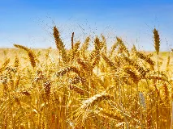
Bléwiki-fr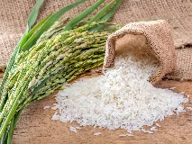
Rizwiki-fr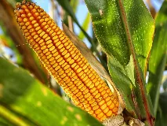
Maïswiki-fr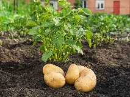
Pomme de terrewiki-fr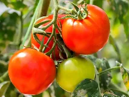
Tomatewiki-fr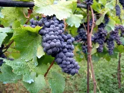
Vignewiki-fr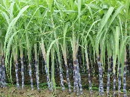
Canne à sucrewiki-fr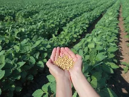
Sojawiki-fr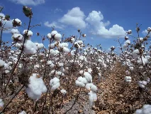
Cotonwiki-fr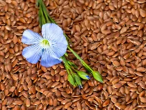
Linwiki-fr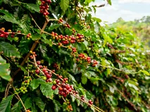
Caféwiki-fr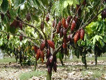
Cacaowiki-fr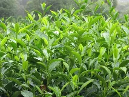
Théwiki-fr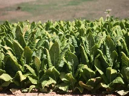
Tabacwiki-fr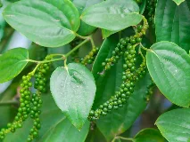
Poivre noirwiki-fr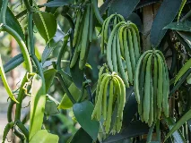
Vanillewiki-fr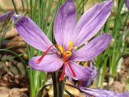
Safranwiki-fr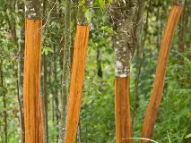
Cannellewiki-fr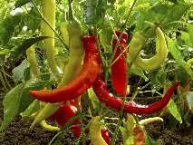
Pimentwiki-fr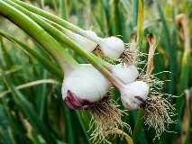
Ailbing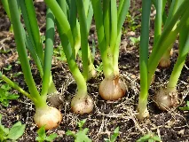
Oignonwiki-fr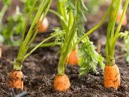
Carottewiki-fr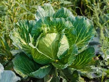
Chouwiki-fr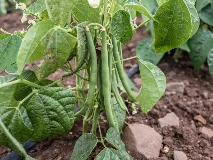
Haricotwiki-fr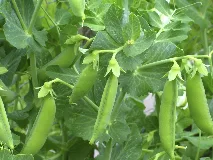
Poiswiki-fr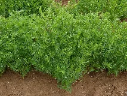
Lentillewiki-fr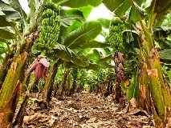
Bananewiki-fr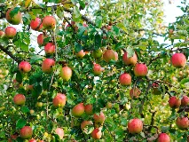
Pommewiki-fr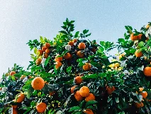
Orangebing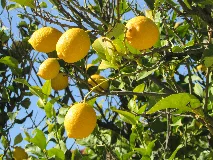
Citronwiki-fr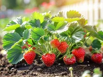
Fraisewiki-fr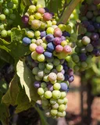
Raisinwiki-fr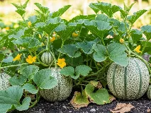
Melonwiki-fr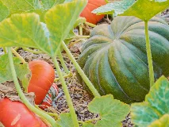
Courgewiki-fr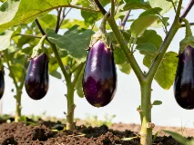
Auberginebing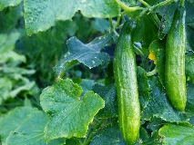
Concombrewiki-fr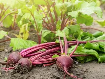
Betteravewiki-fr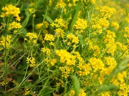
Colzawiki-fr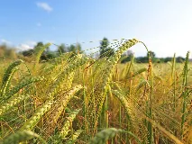
Orgewiki-fr